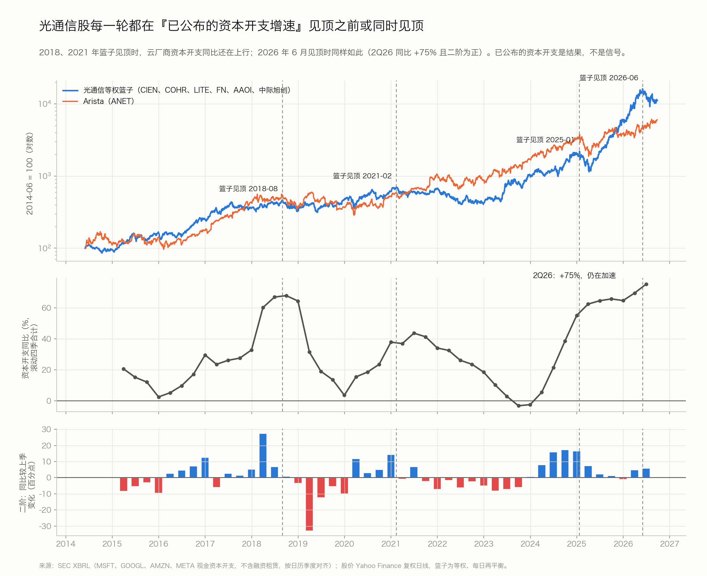
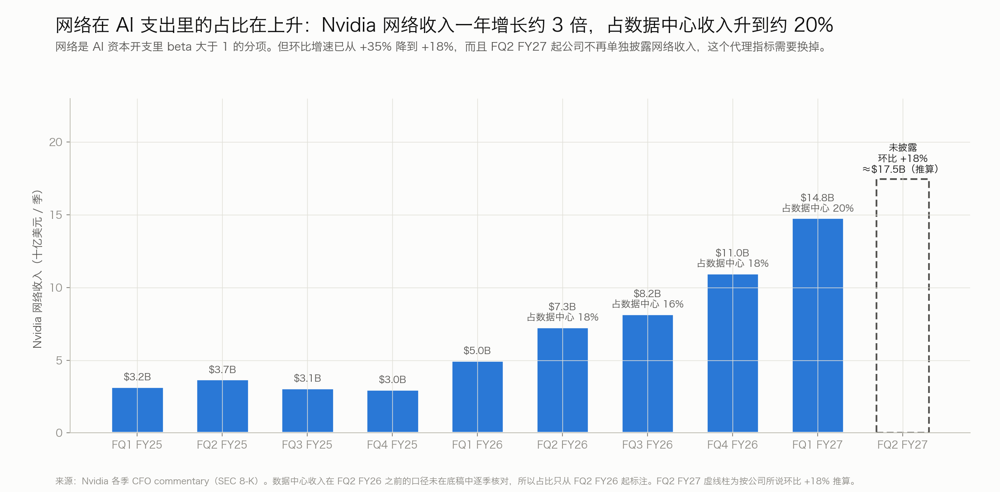
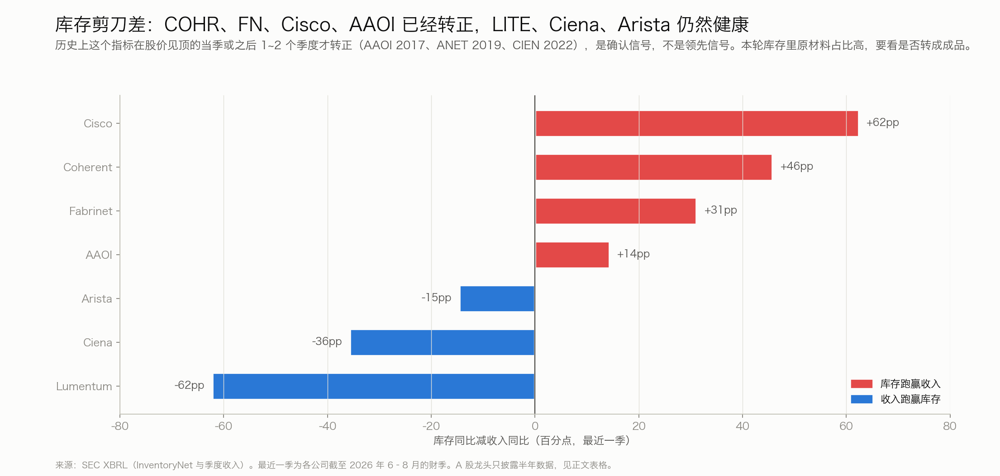
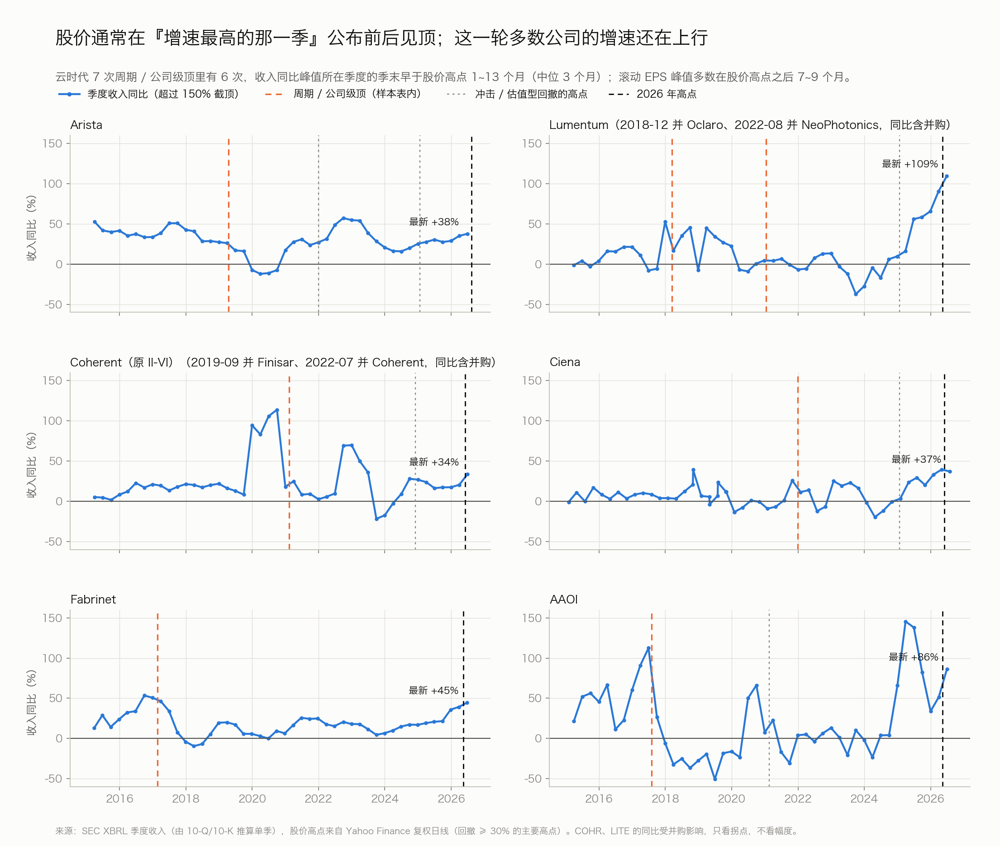
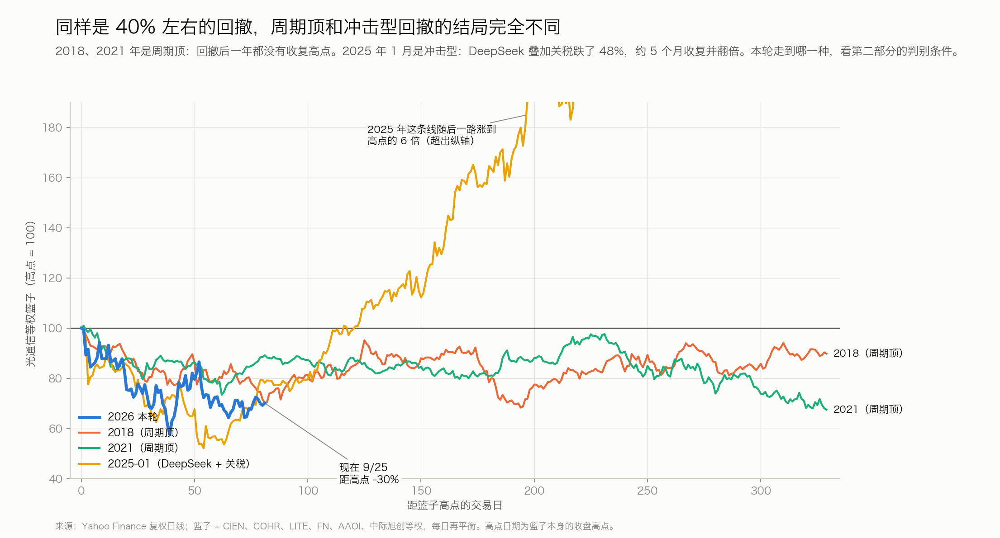
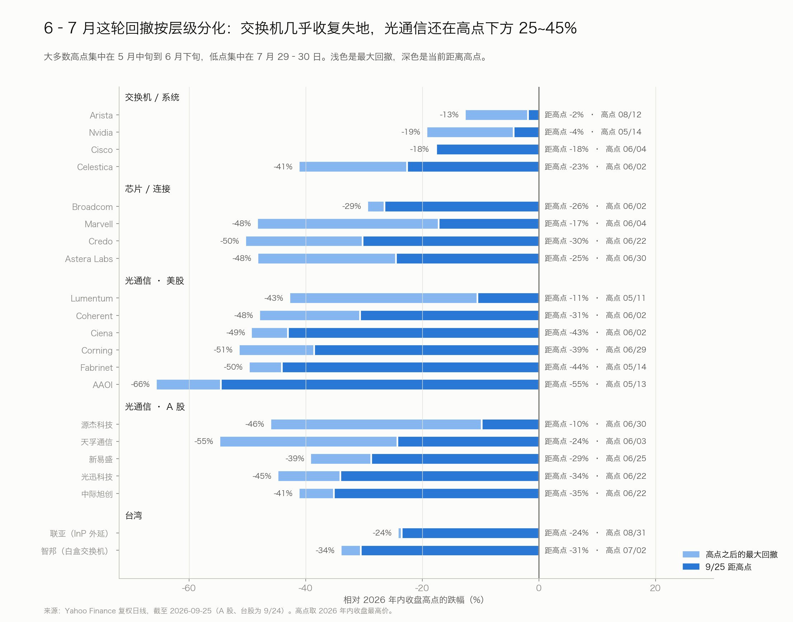
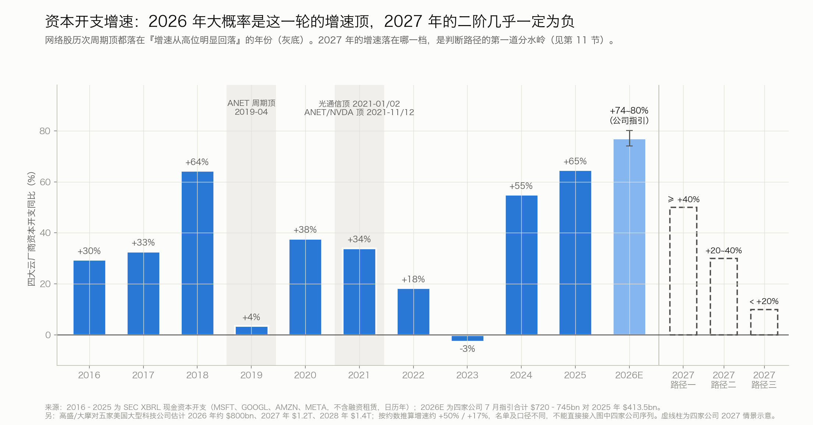
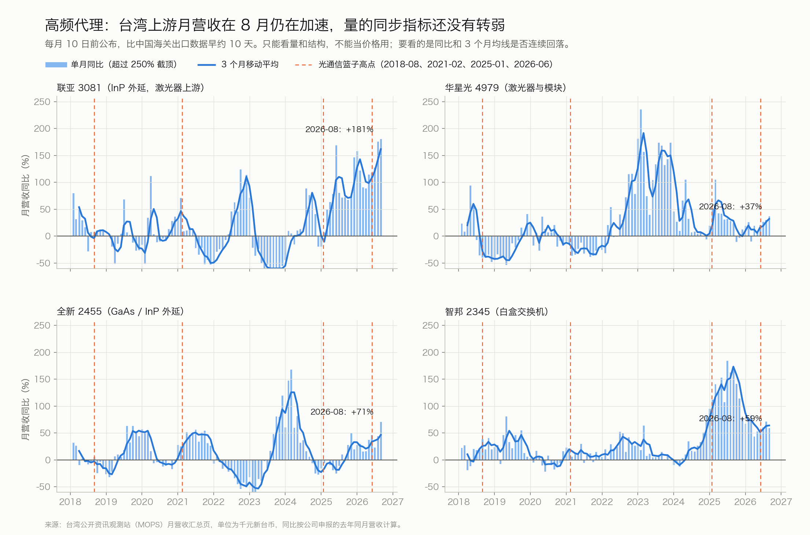

AI 数据中心网络研究：交换机与光通信怎么追踪、怎么量化、现在在哪里、接下来怎么走
本文和《DRAM / HBM 周期研究框架》配套。两者的需求源头相同，都是 AI 资本开支，但传导方式不同：内存是"价格驱动"的商品周期；网络是"数量 × 单位含量"驱动，同规格产品的价格长期向下，而这一轮的定价权集中在上游器件。结构沿用 DRAM 那份：先讲方法，再总结 2000 年以来几轮周期的规律，然后给出 2026 年 9 月的读数，最后给出三条路径和跟踪清单。
一页结论
- 网络股交易的是未来几个季度收入和盈利预期的修正方向，上游是"明年云厂商资本开支的预期"，不是已经公布的资本开支。回测 2015–2026 年：按"已公布的资本开支增速在加快还是放缓"分组，光通信篮子的季度中位回报分别是 +8.1% 和 +8.6%，没有区分度。
- 历史规律：股价在"增速最高的那一季"公布前后见顶，比滚动 EPS 峰值早 7~9 个月；2000 年股价比收入峰值早 4~10 个月。
- 真正的周期顶（2000 年下半年、2019 年 Arista、2021 年光模块）都伴随两件事：资本开支增速的二阶转负，公司指引转为下修。
- 技术路线、政策、情绪这类冲击型回撤，都在 1~9 个月内收复（最长的是 2025 年 DeepSeek 叠加关税，约 9 个月）；周期顶和公司级顶则回撤 38~99%，修复 14 个月以上。
- 现在：需求增速在高位走平，领先指标开始减速；但盈利预期还在上修，供给也没有追上。
- 四大云厂商 2Q26 资本开支同比 +87%（SEC 现金口径），全年指引 $720~745bn（+74~80%），全年只上调没下调。按指引倒推，2H26 同比 +74~84%，二阶接近零。
- Nvidia 下季指引同比从 +106% 降到 +89%，这是本轮第一次减速。它的网络收入环比从 +35% 降到 +18%，之后不再单独披露。
- 公司收入仍在加速：ANET +38%、LITE +109%、AVGO +86%。指引仍在上调：ANET 全年目标一年内 5 次给数，从 $10.5B 上调到 $12.6B。
- Yahoo 一致预期：16 家里 13 家的下财年 EPS 预期在过去 90 天上修；Broadcom 持平略降，AAOI 下修（第 7.2 节）。
- 按指引和基数推算，"增速最高的一季"分层错开：Nvidia 网络和中际旭创已在 4Q25–1Q26 见顶，Arista、Lumentum、Broadcom AI 大约在 3Q26–1Q27，Coherent、Celestica、Marvell 在 2027 年（第 7.1 节）。
- 按基本面看，网络周期比 DRAM 慢一步：DRAM 的条件一已经完全出现、条件二在松动；网络的条件一刚走平，条件二还没出现。
- 股价已经走在基本面前面，而且按层级分化。
- 光通信 6 月初见顶，到 7/29 等权篮子回撤约 40%，现在篮子仍在高点下方约 27~30%（个股 10~55%）；交换机和系统层几乎收复。
- 这个形态很像 2021 年：当时光模块在季度资本开支增速见顶时就见顶，比 Arista、Nvidia 早了 10 个月。
- 本轮最大的风险在供给侧，不在需求侧。
- EML 激光器缺口超过 30% 且没有收窄，3nm DSP 短缺到 2H27，Ciena 判断供需平衡不早于 2028 年。
- 每家客户的供应商从 2–3 家变成 5–7 家；A 股光通信公司的原材料是年初的 2~3.4 倍，而中际旭创、新易盛的客户几乎不预付。
- 这相当于 DRAM 的"现货溢价"：真正的危险时刻是供给追上的时候，按扩产节奏大约在 2H27–2028。
- 三条路径（主观权重）：供给约束下拉长约 40%，分层见顶（2021 年式）约 35%，全面周期顶约 25%。
- 卖方已给出五家美国大型科技公司 2027 年资本开支约 $1.2T、2028 年约 $1.4T 的预测；按高盛公布的四舍五入金额计算，增速约从 2026 年的 +94% 降到 2027 年的 +50%、2028 年的 +17%。这支持“支出继续扩张、增速逐年放缓”，不是支出见顶。10 月底起公司指引和卖方修正方向是关键验证点。
- 其次是 A 股三季报的库存结构、11 月 Lumentum 和 Coherent 披露的 EML 缺口、Q4 光模块年度议价的降幅。
1. 股价在定价什么
和 DRAM 比，有三点根本差别：
- 价格不是主变量。同规格光模块每年降价，靠速率升级（800G → 1.6T → 3.2T）抬高单价。所以要看"量 × 结构"，不能像 DRAM 那样盯一个价格。
- 需求集中在少数买家。一两家客户调整采购，就足以让单只股票跌 50~90%（AAOI 2017、Arista 2019）。客户集中度本身就是风险变量。
- 技术路线会反复制造"冲击"。CPO、铜缆、OCS、模型效率（DeepSeek）这类消息，会在基本面没变时引发 20~50% 的回撤。必须把"冲击"和"周期顶"分开看。
下表把常用指标按领先还是滞后排好（依据见第二部分）：
| 指标 | 和股价顶的时间关系 | 用法和可靠性 |
|---|---|---|
| 下一年资本开支的预期和修正（公司口径、卖方合计） | 同步到领先 | 最核心的自上而下变量。公司每季给一次口径；卖方合计的修正历史需要 FactSet 或 Bloomberg |
| 公司指引和订单（全年目标、backlog、采购承诺、"订满到哪年"） | 领先 1~3 个季度 | 最直接的盈利修正来源。指引停止上调是周期顶的第二个条件 |
| 高频出货代理（台湾月营收、中国光模块出口） | 同步 | 看量和结构，不能当价格用（见 2.2） |
| 公司收入同比增速的峰值 | 收入同比峰值所在季度的季末早于股价顶 1~13 个月，中位 3 个月 | 事后才能确认；实用的读法是"增速最高那一季公布前后要警惕" |
| 库存增速减收入增速（剪刀差） | 股价见顶当季或之后 1~2 个季度才转正 | 确认信号，不是领先信号 |
| 已公布的资本开支及其二阶 | 对光通信没有择时能力（第 3.1 节），对 Arista 有一定区分度 | 是结果，不是信号 |
| 滚动四季 EPS | 多数在股价顶之后 7~9 个月才见顶 | 最容易误导：股价见顶时它几乎总在创新高 |
判断周期顶的三个条件：
- 条件一：需求增速见顶。具体是下一年资本开支增速明显低于今年，或者季度同比连续两季回落、滚动同比开始下降。
- 条件二：盈利预期停止上修。具体是公司全年目标不再上调，指引低于一致预期，或者 backlog 和订单开始下降。
- 条件三（光通信专用）：供给追上。具体是关键器件缺口收窄、交期缩短，重复订单开始被取消。
条件一和条件二同时出现，就构成周期顶；条件三决定下跌有多猛。这套判断和 DRAM 框架一致，是根据公司财务和股价的历史推出来的，还没有用一致预期的历史快照检验过（见第 13 节）。
2. 追踪哪些数据
| 层级 | 看什么 | 频率 / 来源 | 代表什么 |
|---|---|---|---|
| L1 需求源头 | MSFT、GOOGL、AMZN、META、ORCL 资本开支和下年口径；Nvidia 数据中心收入和指引；CoreWeave、xAI 等 | 季度；SEC 10-Q、业绩会 | 整个行业的"总预算"。注意口径：是否含融资租赁、内存涨价占了多少 |
| L2 系统与芯片 | Arista、Nvidia 网络、Broadcom AI、Cisco AI 订单、Celestica、Marvell、Credo、Astera Labs 的收入、指引、递延收入、采购承诺 | 季度；Dell'Oro、IDC 份额季报 | 网络预算被谁拿走；份额在白盒、Nvidia、Arista、Cisco 之间怎么移动 |
| L3 光通信出货 | 中际旭创、新易盛、Coherent、Lumentum、Fabrinet、AAOI、Ciena 的收入和出货量；800G/1.6T 数量预测 | 季度（A 股为半年度明细）；月度代理见 2.2 | 量的爬坡速度，以及重复下单的迹象 |
| L4 瓶颈与利润率 | EML/CW 缺口、DSP 供需、InP 衬底、上游涨价、模块年降、各层毛利率 | 业绩会原话；年度议价（Q4） | 定价权在哪里，供给何时追上 |
2.1 为什么不能只看价格
同规格光模块价格每年下降。按高盛 9 月的预测，800G 从 2026 年的 $418 降到 2028 年的 $314，1.6T 从 $798 降到 $600，年降约 13%（二手转述）。龙头厂商的隐含单价却在上升（中际旭创 1H26 每只约 2,178 元，上年同期 1,595 元），这是 1.6T 占比上升带来的结构效应。所以"价"要分两层看：同规格年降反映竞争，结构均价反映速率升级。本轮真正在涨价的是上游：Lumentum 的 CW 激光器能提价，源杰对新客户报价上调，Ciena 系统产品提价幅度从高个位数到约 20%。
2.2 高频代理：能替代"韩国 DRAM 出口单价"吗
只能部分替代：
- 中国光模块出口（HS 85177950）：每月约 20 日公布。8 月 $8.6 亿，同比 +134%（单一来源）。有分省数据：江苏大致对应中际旭创、天孚和 COHR 无锡，四川大致对应新易盛。缺陷是龙头大量从泰国、马来西亚出货，覆盖面在缩小；美元/公斤也不是每只模块的单价。
- 台湾月营收（MOPS，每月 10 日前）：联亚 3081 是 InP 外延，最接近激光器供给端，8 月同比 +181%；华星光 4979、全新 2455 可作补充；智邦 2345 代表白盒交换机。比中国海关数据早约 10 天。
- 结论：它们是量和结构的月度先行指标，不是价格指标。价格信号要看上游厂商（源杰、LITE、AXT）的毛利率和合同负债，以及 Q4 的年度议价。
3. 量化工具
3.1 资本开支的一阶、二阶和"时钟"
做法和 DRAM 一样：一阶是同比，二阶是同比比上季的变化。数据用四大云厂商的现金资本开支（SEC XBRL，不含融资租赁，按日历季度对齐），这是唯一能从 2012 年连续算到 2026 年、口径一致的序列。

把 2015–2026 年的季度按资本开支"增长 · 加快"和"增长 · 放缓"分组，看同季和下一季的股价表现：
| 象限（滚动四季同比） | 季度数 | 光通信篮子 当季中位 | 下季中位 | Arista 当季中位 | 下季中位 |
|---|---|---|---|---|---|
| 增长 · 加快（一阶 > 0，二阶 > 0） | 24 | +8.1%（75% 上涨） | +12.5% | +13.5% | +9.5% |
| 增长 · 放缓（一阶 > 0，二阶 ≤ 0） | 20 | +8.6%（65% 上涨） | +5.5% | +0.3% | +3.5% |
| 负增长（两个象限合计） | 2 | 样本太少，不做结论 | |||
读法：对光通信，已公布资本开支的二阶几乎没有择时能力，因为它们交易的是下一年的预期（2023 年上半年资本开支负增长，光模块却涨了几倍）。对 Arista 有一定区分度（+13.5% 对 +0.3%）：交换机更接近当期部署，光通信更像期权。所以第 11 节用的是"下一年资本开支口径"，而不是已公布的数据。
3.2 网络占比与单位含量

- 占比在上升：Nvidia FQ1 FY27 网络收入 $14.8B，同比 +199%，同期数据中心整体 +92%。Dell'Oro 显示 2Q26 AI 后端交换机销售首次超过前端。Google 说其资本开支约 40% 是"数据中心和网络设备"（没有单独拆出网络）。
- 每颗芯片对应多少光模块：无阻塞 fat-tree 网络里，每个网卡端口大约需要"2 × 网络层数"只模块（每条链路两端各一只）。2 层约 4 只，3 层约 6 只；网卡到 leaf 这一段用铜缆就减 2 只，交换机侧用双端口模块又减一半。各家估计从 1~1.5 只（只算 GPU 侧）到 4~6 只（全网络）不等，差异主要来自计数口径。
- 102.4T 交换芯片的双重效应：网络层数减少，每颗 GPU 对应的模块数量下降，但单只模块的速率翻倍。LightCounting 据此提示，光模块数量的增速可能跑输 GPU（摘录，未核实）。
3.3 库存与重复下单监测
短缺期客户会向多家供应商重复下单，供应商又向上游囤料。等供给追上，重复订单被取消，收入会在需求并未真正下滑时突然断崖。2000 年的先例是：Cisco 在 2000 年 7 月到 2001 年 4 月库存增加 55%，原材料在 2000 年 Q3 到 Q4 之间增长 300% 以上，随后在 2001 年 4 月计提 $2.25B 过剩库存。跟踪以下四个指标：

| 指标 | 现在的读数 | 怎么读 |
|---|---|---|
| 库存增速减收入增速 | Cisco +62pp，COHR +46pp，FN +31pp，AAOI +14pp；LITE −62pp，Ciena −36pp，Arista −15pp | 转正本身不是卖出信号；要看库存从"原材料"转成"成品和发出商品" |
| A 股模块厂存货（半年） | 中际旭创 +56%，新易盛 +61%，天孚 +103%，光迅 +58%；原材料增至 2~3.4 倍 | 目前多是为短缺备的料；三季报（10 月底）看结构变化 |
| "下游不预付、上游被预付" | 中际旭创合同负债 0.21 亿元，长期预付 0.74 → 17.84 亿元；新易盛合同负债 2.17 亿元，长期预付 0.88 → 18.05 亿元 | 需求一旦转弱，风险全落在模块厂的资产负债表上。反例是源杰：客户预付从约 0 升到 1.54 亿元，议价权最强 |
| 供应商数量与交期 | 每家客户的供应商从 2–3 家增到 5–7 家（LightCounting，摘录）；COHR 称订单排到 2028 年；新易盛半年报自己提示"客户预测订单虚高" | 教科书式的重复下单结构 |
3.4 估值
成长股的估值 = 远期 EPS × 市盈率。周期后段的规律是市盈率先压缩、EPS 后见顶：2000 年 Cisco 股价比收入峰值早 10 个月见顶。下面是 9/25 的快照，用来判断市场把谁当周期股、把谁当成长股：
| 估值分层 | 公司（Yahoo forward P/E） | 含义 |
|---|---|---|
| 按周期股定价（约 14~22 倍） | NVDA 14.4、AVGO 18.2、CLS 18.7、FN 19.2、COHR 21.2、CRDO 21.7、AAOI 22.0 | 市场已按"盈利接近高点"给倍数，下行主要来自盈利预期下修 |
| 按成长股定价（约 27~57 倍） | LITE 27.3、CIEN 30.3、GLW 35.9、MRVL 38.8、ANET 39.8、ALAB 57.0 | 下行同时来自倍数压缩和盈利下修，对"增速见顶"更敏感 |
口径说明：Yahoo 的 forward EPS 多为下一财年，各家财年不同，只能横向粗比，没有和卖方数据核对。Yahoo 对 A 股的 forward EPS 口径不明，所以没有列入。
4. 顶部：股价、收入增速、EPS 谁先见顶

| 周期 / 股票 | 股价顶 | 类型 | 收入同比峰值（季末） | 滚动 EPS 峰值 | 顶部时资本开支二阶 | 随后最大跌幅 |
|---|---|---|---|---|---|---|
| 2000 电信泡沫（CSCO / JDSU） | 2000-03 | 估值顶，之后演变为周期顶 | 收入峰值在股价顶之后 10.0 / 9.8 个月 | 正（订单同比 +4.2pp） | −89% / −99%（到 2002-10） | |
| 2000 电信泡沫（Nortel / Corning / Ciena） | 2000-07 至 10 | 周期顶 | 收入峰值在股价顶之后 5.2 / 4.0 / 9.4 个月 | 负（−5.8pp，之后 −11.7pp） | GLW −99%、CIEN −98%（到 2002-10；Nortel 未计算） | |
| AAOI | 2017-08-01 | 公司级（大客户 40G 需求下滑、份额流失） | 2Q17（+112%），早 1 个月 | 2Q17，同步 | 正 | −86% |
| Fabrinet | 2017-02-21 | 公司级 | 3Q16（+53%），早 5 个月 | 2018-12，晚 22 个月 | 负 | −51% |
| Lumentum / 中际旭创 | 2018-03 | 贸易战、中兴禁令 | 4Q17（+53%），早 2 个月 | 2018-09，晚 7 个月 | 正 | −49% / −53% |
| Arista | 2019-04-16 | 云厂商消化（周期顶） | 1Q18（+41%），早 13 个月 | 4Q19，晚 9 个月 | 负（2019Q1 −33pp） | −52% |
| Coherent / Lumentum | 2021-02 / 2021-01 | 光模块周期顶（季度资本开支增速在 2020Q4 见顶） | COHR 3Q20，早 4 个月；LITE 例外（增速很低，峰值在 7 月） | 2021-09 / 10，晚 8~9 个月 | 刚转负 | −53% / −38% |
| Ciena | 2021-12-29 | 供应链 + 消化 | 2021-10（+26%），早 2 个月 | 2021-10，早 2 个月 | 负 | −50% |
| Arista / Nvidia | 2021-11/12 | 加息 + 资本开支减速 | ANET 收入同比到 3Q22 才见顶 | ANET 盈利持续增长 | 负 | ANET −37% |
从这张表可以得出四条规律：
- 股价顶在"收入增速顶"和"EPS 顶"之间。收入同比峰值所在季度的季末，在 7 次样本里有 6 次早于股价顶，中位约 3 个月；滚动 EPS 多数在股价顶之后 7~9 个月才见顶。2000 年股价比收入峰值早 4~10 个月（中位 9.4 个月）。和 DRAM 一样，股价见顶时 EPS 都还在涨。
- 真正的周期顶都伴随资本开支二阶转负。2000 年下半年那一批、2019 年 Arista、2021 年光模块和 2021 年底 Arista、Nvidia 都是这样。二阶为正时的"顶"要么是公司级或政策事件（AAOI 2017、2018 年中兴禁令），要么是估值顶（2000 年 3 月的 Cisco、JDSU），后者要等资本开支随后转负才被确认。
- 光通信先见顶，交换机后见顶。2021 年光模块在季度资本开支增速见顶的当季（2020Q4，+53%）就见顶，比 Arista、Nvidia 早 10 个月。2022 年消化期，Arista 全年只跌 15.6%（收入 +48.6%），光模块股跌 36~51%。
- 公司级风险可以单独制造 50~90% 的回撤。AAOI 2017 年（Amazon 收入占比从 54.6% 降到 35.4%）跌了 91.5%，用了 103 个月才收复。2019 年 Arista 在一家大客户暂停下单后，一天跌 24%。
5. 冲击型回撤和周期顶怎么区分

| 类型 | 例子 | 回撤 | 修复 |
|---|---|---|---|
| 冲击型（资本开支二阶 ≥ 0） | GTC 2024"铜进光退"（NVL72 柜内用铜） | COHR −26%，CIEN −30% | 2~7 个月 |
| 2024-07/08 AI 回报担忧 + Blackwell 延期 | 中际旭创 −37% | 2~4 个月 | |
| 2025-01 DeepSeek，叠加 4 月关税 | 篮子 −48% | 5.6~9.4 个月 | |
| 2025-09/10 Meta CPO 可靠性数据 | 天孚 −35% | 1.3~3.2 个月 | |
| 2026-02/03"短距互联弃用光模块"担忧 | COHR −27%，LITE −29% | 0.7~1.3 个月 | |
| 2026-06 至今（本轮） | COHR −48%，CIEN −49%，中际旭创 −41% | 约 4 个月，未修复 | |
| 周期顶（二阶转负，之后增速接近零或水平下降） | 2000–2002 | −89~−99% | 25 年以上或至今未收复 |
| 2018–2019（中际旭创、LITE、ANET） | −49~−53% | 20~25 个月 | |
| 2021–2022（光模块、NVDA、ANET） | −38~−72% | 14~55 个月 |
区分清单（历史上的周期顶五条大多满足，冲击型大多不满足）：
- 资本开支季度同比连续两季回落，而且滚动同比开始下降；
- 公司指引低于一致预期，或者全年目标被下调；
- 一两家大客户的采购策略改变（Arista 2019、AAOI 2017）；
- 库存剪刀差转正，而且库存从原材料转向成品；
- 供给侧冲击：大额增发或 IPO、出口管制。这一条不是历史周期顶的必要条件，但会拉长修复时间。
6. 底部：怎么形成的
| 底部 | 形成机制 | 与基本面的时间关系 |
|---|---|---|
| 2002-10（CSCO、JDSU、CIEN、GLW 同步） | 一次性大额计提（JDSU 年度亏损 $50.6B，Nortel 2001 年亏损 $27.3B）；供给出清（WorldCom 破产，CLEC 资本开支从峰值下降约 80%） | 通信设备订单同比在 2002Q3–Q4 见底，股价约早 1 个季度；运营商资本开支到 2003 年还在下降，股价领先 1 年以上 |
| 2018-11 / 2019-01（LITE、中际旭创） | 客户去库存结束，400G 和 5G 前传开始放量，中兴禁令解除 | 基本面谷底在 2019Q1–Q2，股价早 1~2 个季度；资本开支增速到 2019Q4 才见底，股价早约 11 个月 |
| 2022-10（中际旭创、新易盛、NVDA） | 消化接近尾声，800G 和 AI 新需求出现，利率接近见顶 | 资本开支同比谷底在 2023Q2–Q3，股价早 9~12 个月；新易盛 2023 年净利润 −23.8%，股价却涨了 191% |
| 2025-04 | 政策反转（关税暂停 90 天），云厂商上调资本开支 | 资本开支二阶只小幅转负，随即转正 |
规律：周期性底部比资本开支增速的谷底早 1 个季度到 12 个月。触发点通常是以下之一：一次性计提或撤回指引、公司明确说"去库存完成"、新一代速率开始放量。
7. 当前读数
| 条件 | 指标 | 最新读数 | 状态 |
|---|---|---|---|
| 条件一 需求增速见顶 | 云厂商资本开支同比（已公布） | 四大云厂商 2Q26：现金口径 +87%，含租赁口径 +79%，还在加速。按全年指引倒推 2H26 为 +74~84%，二阶接近零 | ▲高位走平 |
| 2027–28 年资本开支预期 | 高盛与大摩：五家美国大型科技公司 2027 年约 $1.2T、2028 年约 $1.4T。高盛称 2026 年约 $800bn、同比 +94%；按四舍五入金额推算，2027 年约 +50%、2028 年约 +17%。公司尚未公布统一的 2027 年合计指引。 | ▲金额创新高，增速逐年放缓 | |
| Nvidia 数据中心指引 | FQ3 指引同比约 +89%，FQ2 为 +106%，本轮第一次同比减速 | ▲开始减速 | |
| Nvidia 网络收入 | 环比 +35% → +18%，FQ2 FY27 起停止单独披露 | ▲开始减速 | |
| 公司收入同比 | ANET 27.5% → 37.7%（Q3 指引约 +43%），LITE +109%，AVGO +86%，CLS +62%，FN +45%；只有 CRDO 从 +272% 降到 +115% | ✓多数仍在加速 | |
| 条件二 盈利预期停止上修 | 全年目标和指引 | ANET $10.5B → $12.6B（5 次给数）；CLS $16.0B → $20.5B；MRVL FY28 $16.5B → $18B；AVGO FY27 AI 约 $115B；CSCO FY27 AI 收入 $6B → $7.5B | ✓仍在上修 |
| 一致预期修正（Yahoo，90 天） | 下财年 EPS 预期 16 家里 13 家上修（ANET +16.5%、NVDA +23.7%、中际旭创 +72%）；AVGO −0.4%（30 天 −1.0%），AAOI −3.6%（本年 −23.5%）；LITE、新易盛最近 7 天下修 13~15%（见 7.2） | ✓多数仍上修 | |
| 例外 | ANET 2026 年 AI 目标 8 月维持"至少 $3.5B"，没有上调 | ▲需跟踪 | |
| 卖方光模块预测 | 大摩 5 月、高盛 9 月大幅上修 1.6T/3.2T；但 2026 年 1.6T 预测分歧超过 3 倍（Cignal 约 1,000 万只，高盛 3,283 万只） | ✓仍在上修 | |
| 利好的边际效果 | 业绩超预期加上调指引后：MRVL −10.3%，CRDO −20.0%，CSCO 盘后 −4.6% | ▲钝化 | |
| 条件三 供给追上 | 激光器 | Lumentum EML 缺口超过 30%，"没扩大也没收窄"；高功率 CW 缺口在扩大 | ✓仍短缺 |
| DSP | 2026 年 1.6T DSP 需求超过 2,000 万颗，供给 1,600–1,700 万颗；短缺至少到 2H27（野村专家会，单一来源） | ✓仍短缺 | |
| 库存与预付 | 剪刀差 COHR +46pp、FN +31pp、CSCO +62pp；A 股原材料 2~3.4 倍；模块厂客户不预付 | ▲结构在形成 | |
| 供应商数量 | 每家客户的供应商从 2–3 家增到 5–7 家 | ▲重复下单温床 | |
| 资金与市场 | 资本开支的资金来源 | 四大云厂商 2Q26 资本开支 / 经营现金流约 100%，自由现金流约 $7bn；GOOGL $80bn 股权融资，AMZN 长期债务从 $68.8bn 增至 $133.0bn，ORCL 借款 $125bn | ▲转向外部融资 |
| 股价 | 光通信个股距 2026 年高点 −10~−55%，等权篮子约 −27~−30%；芯片层约 −16%；交换机和系统层约 −4%；QQQ 已收复 | ●光通信已按增速顶定价 |
诊断：条件一处在"高位走平、领先指标开始减速"的阶段；条件二还没出现；条件三的结构在形成，但时间点在 2H27–2028。对照 DRAM：DRAM 的条件一已经完全出现，条件二在松动。所以按基本面，网络周期比 DRAM 慢一步。但光通信股价已经按"增速顶"在交易，这是两者最大的错位。
7.1 "增速最高的一季"在什么时候
推算方法。下一季的同比会不会继续上升，取决于下一季的环比增速能否超过"去年同一季的环比增速"，也就是要跨过基数。下表用公司指引和已公布的基数来推算。
| 层级 | 公司 | 最近几季同比 | 下季指引隐含同比 | 下季指引环比 / 要跨过的去年同季环比 | 增速峰值季度 |
|---|---|---|---|---|---|
| 已经过去 | Nvidia 网络 | +162% → +263% → +199% → 约 +140%（FQ2 FY27 为推算） | — | — | 11–1 月季（FQ4 FY26） |
| 中际旭创 | 1Q26 +192%，2Q26 +175% | — | 2Q26 环比 +14%；3Q25 环比约 +26%（基数约 102 亿元，记忆值，未核对） | 1Q26 | |
| Ciena / Fabrinet / Credo | CIEN 40% → 37%；FN 39% → 45%；CRDO 272% → 115% | CIEN +29%；FN +43%；CRDO +98% | CIEN +5% / +11%；FN +6% / +8%；CRDO +11% / +20% | CIEN 2–4 月季；FN 4–6 月季；CRDO 2025 年下半年 | |
| 大概率已过或正在见顶 | Nvidia 整体 | +73% → +85% → +106% | +89%（FQ3 指引 $108B） | +12% / +22% | 5–7 月季（FQ2 FY27） |
| 四大云厂商资本开支 | 1Q26 +80%，2Q26 +87%（现金口径） | 2H26 +74~84%（含租赁口径，按全年指引倒推） | — | 2Q–3Q26 | |
| 接下来 1~3 个季度 | Arista | +29% → +35% → +38% | 约 +43% | +9% / +5%；之后 4Q26 要跨过 +8%，1Q27 要跨过 +9% | 3Q–4Q26（约 +43% 后走平） |
| Lumentum | +65% → +90% → +109% | 约 +134% | +24% / +11%；之后要连续跨过 +25%、+21%、+24% | 7–9 月季（FQ1 FY27），可能延续到 10–12 月 | |
| AAOI | +34% → +51% → +86% | 约 +130% | +42% / +15%；之后要跨过 +13%、+13%、+27% | 4Q26–1Q27 | |
| Broadcom | +29% → +48% → +86% | 约 +93% | +18% / +13%；之后要跨过 +7%、+15%、+33% | 2026 年 11 月到 2027 年 5 月之间结束的季度 | |
| 2027 年 | Coherent、Celestica、Marvell、Astera Labs、Cisco | COHR 21% → 34%；CLS 53% → 62%；MRVL 28% → 37%；ALAB 93% → 104%；CSCO 12% → 18% | COHR +45%；CLS +69%；MRVL +52%；ALAB +139%；CSCO +22% | 去年同季基数只有 +1%~+20%，而且公司都说 2027 年会继续增长 | 2027 年 |
结论：这一轮的"增速最高一季"是分层错开的，不是一个季度。
- 按收入规模加权，最大的两块（Nvidia 网络、中际旭创）的同比已经在 4Q25–1Q26 见顶。需求源头（云厂商资本开支）的季度同比大约在 2Q–3Q26 见顶。
- 第二梯队（Arista、Lumentum、AAOI、Broadcom AI）在 3Q26–1Q27 见顶，对应财报在 2026 年 11 月到 2027 年 5 月陆续公布。
- Coherent、Celestica、Marvell、Astera Labs 要到 2027 年。
和股价的一致性检验：目前大体成立。按第 4 节的规律，股价在增速峰值季度的季末之后约 1~5 个月见顶。
- 增速峰值已过的公司，股价都已大幅回落：中际旭创（1Q26 → 6/22 见顶，距高点 −35%）、Ciena（4 月底 → 6/2，−43%）、Fabrinet（−44%）、Credo（−30%）。
- 峰值还在后面的 Arista（−2%）、Lumentum（−11%）离高点最近。
- 例外是 Coherent（−31%）、Broadcom（−26%）、AAOI（−55%）：增速还在上升，股价却已下跌。原因分别是库存剪刀差、毛利率下行、CPO 和客户集中度，而不是增速本身。
对应的警戒窗口：交换机和芯片层大约在 2026 年 12 月到 2027 年 3 月（Arista、Lumentum 的 3Q/4Q26 财报），Broadcom 在 2027 年上半年。
口径和适用范围：
- 这是按指引推算的。公司通常会小幅超过指引（Arista 上季超过约 8%），所以实际同比可能高几个百分点。
- 峰值的时点主要由基数决定，比较稳健。但如果 2027 年供给放松、环比增速明显加快（路径一），第二梯队的峰值会推迟到 1H27；路径三则会提前。
- Nvidia FQ2 FY27 的网络收入是按环比 +18% 推算的。
7.2 EPS 和股价：谁先见顶，现在的一致预期怎么走
历史顺序：
- 收入增速见顶，大约在股价顶之前 3 个月。
- 股价见顶。
- 已公布的滚动 EPS 见顶，大约在股价顶之后 7~9 个月；2000 年为 1~10 个月。
等到 EPS 见顶公布时，股价通常已经从高点跌了 16~36%。7 例里有 5 例：AAOI 2017 −32%，LITE 2018 −20%，ANET 2019 −29%，COHR 2021 −36%，LITE 2021 −16%。
例外有两种：
- 公司级顶：AAOI 2017 年下调指引当天，EPS 和股价几乎同时见顶。
- 成本先压垮利润：Ciena 2021 年因供应链成本，EPS 比股价早 2 个月见顶。
所以 EPS 的"水平"不是择时信号，有用的是 EPS 的增速和一致预期修正。下表是 9/27 从 Yahoo 抓取的一致预期快照：
| 公司 | 本财年 → 下财年 EPS 增速 | 本季 → 下季 EPS 同比 | 下财年 EPS 预期修正：90 天 / 30 天 / 7 天 | 分析师 |
|---|---|---|---|---|
| Arista | +38% → +26% | +44% → +40% | +16.5% / +0.5% / +0.5% | 28 |
| Nvidia | +95% → +69% | +90% → +69% | +23.7% / +19.5% / 0% | 53 |
| Broadcom | +71% → +66% | +96% → +99% | −0.4% / −1.0% / 0% | 47 |
| Marvell | +48% → +61% | +45% → +70% | +9.4% / +7.0% / −0.1% | 42 |
| Cisco | +19% → +9% | +32% → +18% | +7.2% / +0.4% / +0.4% | 26 |
| Celestica | +86% → +67% | +89% → +53% | +33.8% / +30.2% / −0.9% | 9 |
| Credo | +82% → +54% | +91% → +49% | +9.7% / +6.4% / +0.3% | 19 |
| Astera Labs | +119% → +59% | +143% → +145% | +50.5% / 0% / 0% | 23 |
| Coherent | +68% → +48% | +69% → +70% | +11.5% / 0% / 0% | 19 |
| Lumentum | +150% → +59% | +283% → +201% | +22.1% / +4.6% / −13.1% | 19 |
| Fabrinet | +29% → +20% | +43% → +32% | +2.5% / +2.3% / +1.8% | 8 |
| Ciena | +172% → +77% | 基数太低 | +28.4% / +26.6% / +4.9% | 7 |
| Corning | +30% → +33% | +31% → +27% | +3.8% / +1.0% / +0.3% | 16 |
| AAOI | 扭亏 | 扭亏 | −3.6% / −3.6% / 0%（本财年 −23.5%） | 5 |
| 中际旭创 | +208% → +122% | +184% → +174% | +72.1% / +6.4% / +6.6% | 4 |
| 新易盛 | +155% → +104% | +164% → +163% | +38.1% / +38.1% / −14.8% | 2 |
口径：
- "本财年"按各公司财年划分：ANET、CLS、ALAB、AAOI、GLW 与 A 股为 2026 年，NVDA、MRVL 为截至 2027 年 1 月的财年，LITE、COHR、FN 为截至 2027 年 6 月的财年，其余按各自财年。
- Yahoo 数据来自卖方汇总，A 股只有 2~4 位分析师，最近 7 天的大幅变化可能只是一两位分析师调整。
读法：
- EPS 增速：16 家里有 13 家，下一财年的 EPS 增速低于本财年，所以年度 EPS 增速的峰值就在本财年。季度 EPS 同比在本季到下季回落的有 Arista、Nvidia、Cisco、Celestica、Credo、Lumentum、Fabrinet、中际旭创；还在加速的是 Broadcom、Marvell、Astera Labs、Coherent。和 7.1 节的收入推算一致。
- EPS 水平：一致预期里所有公司下一财年的 EPS 都还在增长，没有任何一家出现见顶。这是常态：一致预期几乎从不预测见顶。
- 修正方向：整体仍在上修，条件二在整体层面还没出现。但 Broadcom 持平略降（毛利率）、AAOI 下修，Lumentum 和新易盛最近一周下修，这是第一批苗头，要看 10–11 月财报后是否扩散。
EPS 水平大概什么时候见顶（推断，不是一致预期）：EPS 水平见顶需要满足以下任一条件：
- 收入水平停止增长。历史上发生在资本开支增速接近零，或者供给追上、重复订单被取消的时候，本轮大约在 2H27–2028。
- 利润率下降。来源包括 2027 年的年度降价、上游涨价和内存成本。
| 路径 | 季度 EPS 见顶 | 滚动四季 EPS 见顶 | 对应的股价见顶窗口（按领先 7~9 个月倒推） |
|---|---|---|---|
| 一、供给约束下拉长 | 2028 年 | 2028–2029 年 | 2027 年下半年或更晚 |
| 二、分层见顶 | 光模块厂 1H27–2H27；交换机和芯片 2H27–1H28 | 2H27–2028 年 | 光通信已在 2026 年 6 月；交换机和芯片 2026 年底到 2027 年 |
| 三、全面周期顶 | 1H27；光模块厂可能 3Q–4Q26 就是高点 | 2027 年 | 2026 年 6 月已是高点 |
两种方法可以互相校验：用"收入增速峰值 + 约 3 个月"推，交换机和芯片层的股价警戒窗口是 2026 年 12 月到 2027 年上半年；用"EPS 见顶 − 7~9 个月"倒推，路径二下落在 2026 年底到 2027 年。两者在 2027 年上半年前后重合。
8. 这轮回撤为什么集中在光通信

6 月初到 7/29，QQQ 跌了 11%，SOXX 跌了 29%，MU 跌了 39%，光通信等权篮子跌了约 40%。之后 QQQ 已收复，交换机层接近收复，光通信仍然深度落后。可能的原因，按证据强弱排列：
- 历史上光通信本来就先见顶。2021 年光模块在季度资本开支增速见顶时就见顶。按指引倒推，2Q26 很可能就是这一轮季度增速的峰值（2H26 为 +74~84%，2Q26 为 +87%）。
- 利润被上游挤压。新易盛 Q2 毛利率环比降到 48.0%，光迅降到约 24.6%，同时 LITE non-GAAP 毛利率升到 50.4%，源杰升到 80%。模块厂夹在涨价的上游和议价的客户之间。
- 重复下单的担忧。库存剪刀差、预付不对称、供应商数翻倍（第 3.3 节）。
- 供给和政策冲击（多为单一来源）。
- 6/9 SemiAnalysis 称 CPO 延后，当天 CPO 敞口大的美股跌 8~17%。
- 中际旭创 H 股募资最高约 614 亿港元。
- 8/4 路透报道 FCC 起草禁令，拟禁止进口中国"新型号"数据中心光模块，商务部 8/5 回应。
- 还有康宁玻璃互联替代担忧、Kimi K3 模型效率的报道。
按第 5 节的清单，这次回撤在基本面上更像冲击型：资本开支二阶为正，指引仍在上修。但它已经持续约 4 个月没有修复，比大多数冲击型回撤都长。这说明市场在提前交易 2027 年的减速。
8.1 两个案例：中际旭创和博通
两家公司的股价都已大幅回落，但原因不同。按"股价 = 下一财年 EPS 预期 × 市盈率"拆开看：
| 公司 | 增速位置 | 股价（高点 → 9/25） | 下一财年 EPS 一致预期（约 90 天前 → 现在） | 隐含市盈率 | 读法 |
|---|---|---|---|---|---|
| 中际旭创 | 收入同比 1Q26 +192% 见顶，2Q26 +175% | 1,382 → 896（−35%） | 2027E：38.6 → 66.5 元（+72%，4 位分析师） | 约 36 倍 → 13.5 倍 | 盈利预期大幅上调，股价却下跌，下跌全部来自估值压缩：市场把 2026–27 年当作盈利高点来定价 |
| 博通 | 还在加速：收入 +86%，下季指引 +93%；AI +221%，下季指引 +236% | 480 → 353（−26%） | FY27E：19.46 → 19.38 美元（−0.4%；30 天 −1.0%） | 约 24.7 倍 → 18.2 倍 | 收入预期在涨，EPS 预期不涨：毛利率 77.1% → 75.0% → 指引约 73%，因为 XPU 里转手的内存占比变高。这是大盘股里第一例"条件二"苗头 |
- 博通的下跌分两段。
- 6/2 到 7/29 跌 23.0%，和 SOXX 的 −23.1% 一样，是板块性下跌。
- 7/29 之后，SOXX 反弹 23.2%，博通反而跌了 4.6%，落后的部分完全是公司自身原因。
- 单日跌得最多的是 6/4 的 −12.6%（SOXX 当天 −2.1%）。当天是 6/3 盘后 FQ2 财报后的第一个交易日：公司给出的 FQ3 收入指引是 $29.4B（环比 +33%），AI 收入指引 $16.0B，但营业利润率指引约 67%，市场没有为这部分高增长买单。
- 客户集中度，以及 Google TPU 业务的竞争（Marvell 与 Google 的协议）也可能是原因，但没有核实。
- 中际旭创的时间线符合第 4 节的规律。增速峰值季度的季末是 3/31，股价在 6/22 见顶，间隔约 3 个月。
口径：隐含市盈率 = 股价 ÷ 下一财年 EPS 一致预期。"约 90 天前"对应 6 月底，和两家公司的高点日期（6/2、6/22）接近但不完全相同。中际旭创只有 4 位分析师覆盖，预期数字波动大。
9. 供给与瓶颈时间表
| 瓶颈 | 现状 | 扩产 / 缓解时间 |
|---|---|---|
| EML 激光器（InP） | Lumentum 缺口超过 30%，没收窄；Nvidia 2026-03 分别投资 LITE、COHR 各 $2B 锁产能（SEC 8-K） | LITE 目标 2026 年 12 月季 EML 出货同比 +50% 以上；COHR 内部 InP 产能本季末同比翻倍，苏黎世 6 寸线 1H27 投产；LITE 北卡新厂 2028 年 |
| 高功率 CW（CPO 用） | 缺口在扩大 | COHR 12 月季开始贡献收入；LITE 首笔外部激光源订单 2H27 交付 |
| 3nm DSP | 需求超过 2,000 万颗，供给 1,600–1,700 万颗（单一来源） | 至少到 2H27 |
| InP 衬底 | AXT 对美发货许可截至 8 月未获批；TrendForce 认为失衡持续到 2027 年以后 | AXT 2026 年底产能翻倍，2027 年新厂再翻倍 |
| CPO 封装（TSMC COUPE） | 瓶颈是光引擎良率，以及和 AI 芯片争抢 2.5D 封装产能 | 2027–28 年放量 |
| 整体供需平衡 | 各方判断分歧大 | LightCounting：2026 年底；中际旭创：2H26–1H27 边际改善；野村：DSP 至少到 2H27；Ciena：不早于 2028 年 |
实质性新增产能集中在 2027–2028 年。对光通信来说，"供给追上"的窗口在 2H27–2028，相当于 DRAM 的"现货跌破合约价"：那时客户最先砍掉的是重复订单。
10. 这一轮的特殊之处
- 这是供给约束型上行。收入增速被产能"摊平"到更长时间，短期对周期顶不利的"增速断崖"更难出现；代价是重复下单在累积。
- 定价权在上游。同规格年降只有个位数到约 13%，低于以往；涨价出现在激光器、衬底和 DSP。模块厂的毛利率成了第一个变量。
- 资金来源外部化。资本开支 / 经营现金流约 100%，GOOGL、AMZN、ORCL 单季自由现金流为负。可持续性开始依赖资本市场的融资意愿，这是典型的周期后段特征。市场的反应也很清楚：AMZN 上调资本开支、同时 AWS 加速，股价次日涨约 15%；MSFT 1 月、META 7 月资本开支增加但收入不配合，股价大跌。
- 内存涨价推高了名义资本开支，也挤压了网络毛利。MSFT 2026 年约 $25bn 资本开支来自元器件涨价，AMZN 上调的 $20bn 全部归因于内存。所以网络设备的"数量"增速低于资本开支的名义增速；Nvidia、Broadcom、Cisco 的毛利率下行也主要来自内存成本。这是 DRAM 周期和网络周期之间最直接的连接。
- 技术切换扎堆。1.6T、102.4T、CPO（Spectrum-X Photonics 8 月全面量产）、scale-up 以太网（2027–28 年）、Google OCS，同时发生。它们更多是改变份额，而不是减少总量，但会反复制造冲击型回撤。
- 客户高度集中。CRDO 前两大终端客户占 61%，Celestica 三家客户占 63%，Ciena 两家客户占 41.7%。
- 数据口径在变。Nvidia 停止披露网络收入；MSFT 从 FY27 起把更多数据中心租赁改记为经营租赁，2026 年资本开支口径从约 $190bn 降到约 $175bn，公司称实际投资计划不变。
11. 三条路径

| 路径（主观权重） | 触发条件 | 股价形态 | 历史类比 |
|---|---|---|---|
| 一、供给约束下拉长 约 40% | 五家口径的 2027 年增速维持在约 +40% 以上（接近当前卖方约 +50% 基准）；EML 和 DSP 缺口延续到 2027 年；Arista 上调 AI 目标；光模块年度议价降幅不超过约 10% | 光通信在 1H27 收复并创新高，交换机继续创新高；中途仍会有 20~40% 的冲击型回调；顶部推迟到供给追上前后（2H27–2028） | DRAM 2016–18 年；光模块自身的 2023–25 年 |
| 二、分层见顶 约 35% | 五家口径的 2027 年增速落到 +20~40%（明显低于当前卖方基准）；公司收入同比在 4Q26–1Q27 见顶；光模块降价幅度扩大，毛利率继续被挤压 | 光通信的 6 月高点就是本轮高点，或者只有微弱新高；交换机和系统层在 2027 年资本开支滚动增速回落时才见顶 | 2021 年：光模块 1~2 月见顶，Arista、Nvidia 在 11~12 月见顶 |
| 三、全面周期顶 约 25% | 五家口径的 2027 年增速低于 +20%，或融资受阻（大额发债或增发失败、信用利差走阔）；A 股三季报库存转向成品；EML 缺口提前收窄；公司指引第一次下修 | 各层同步走弱，回撤 40~70%，修复 14~55 个月 | 2019 年 Arista；2021–22 年 |
分档的锚点：高盛、大摩对五家美国大型科技公司的 2027 年预测约 $1.2T；高盛公布 2026 年约 $800bn（同比 +94%），以四舍五入金额计算，2027 年约 +50%。因此“约 +40%”是接近基准的延续情景，不再是旧版的 +30%。三档是周期情景经验线，不是精确阈值；权重为主观判断，未经过统计检验。五家卖方口径与图中四家云厂商公司指引的名单、会计口径不完全相同。
未来 90 天的判断规则
- 10 月底四大云厂商三季报：
- 公司官方指引和卖方预测修正能支持五家口径 2027 年增速约 +40% 以上，且收入同步加速：路径一权重上调。
- 预测降至 +20% 以下，或有公司下调 2027 年计划并伴随融资收紧：路径三权重上调。
- 同时看云收入是否加速。资本开支上调加上收入加速，市场会奖励；只有资本开支上调，市场会惩罚。
- A 股三季报（10 月 31 日前）：存货从原材料转向库存商品和发出商品，而合同负债不升，说明重复下单风险在上升，指向路径二或三。
- Lumentum、Coherent 11 月财报：EML 缺口开始收窄，说明供给追上的时间提前（路径二或三）；缺口不变或扩大，支持路径一。
- 月度数据：联亚 3081 月营收连续两个月环比下降，同时中国 85177950 出口额连续环比下降，说明量的先行指标转弱。
- "利好不涨"是否扩散：业绩超预期、上调指引后股价下跌，如果从 MRVL、CRDO 扩散到 ANET、NVDA，说明市场在交易增速顶，与路径二一致。
- 光模块 2027 年度议价（Q4 谈判，12 月到次年 1 月传出）：降幅明显超过 10%，模块厂的利润会先于收入见顶。
12. 跟踪清单
| 时间 | 事件 | 看什么 |
|---|---|---|
| 10/6 | Marvell 投资者日 | FY28 约 $18B 能否上调；scale-up 光学时间表 |
| 每月 10 日前 | 台湾 MOPS 月营收 | 联亚 3081、全新 2455、华星光 4979、智邦 2345、光圣 6442 的同比和环比 |
| 每月约 20 日 | 中国海关光模块出口 | 85177950 金额、美元/公斤、江苏和四川分省数据 |
| 10 月下旬至 31 日 | A 股三季报（中际旭创、新易盛、天孚、源杰、光迅） | 存货结构、合同负债、预付、毛利率 |
| 10 月下旬（以公司公告为准） | MSFT、GOOGL、META、AMZN 三季报 | 管理层首次给出或更新 2027 年资本开支指引；并核对卖方对五家公司合计预测的修正、云收入增速、自由现金流和融资 |
| 11 月上中旬（以公司公告为准） | Arista、Lumentum、Coherent、Fabrinet、AAOI、Cisco | ANET AI 目标能否上调；EML 缺口；1.6T 爬坡；Cisco AI 订单 |
| 11 月下旬（以公司公告为准） | Nvidia FQ3 | 能否兑现 $108B；FQ4 同比是否继续减速；是否恢复披露网络收入 |
| 12 月（以公司公告为准） | Broadcom、Marvell、Credo、Ciena | AVGO FQ4 AI $21.7B 指引兑现情况和 FY27 展望；CIEN backlog 能否超过 $10B |
| 12 月到次年 1 月 | 光模块年度议价 | 800G、1.6T 的 2027 年降幅 |
月度高频数据的最新读数

- 联亚 3081：8 月营收同比 +181%，3 个月均线 +162%。1 月以来每个月环比都在增长，MOPS 备注是"数据中心产品出货量较同期增加"。
- 智邦 2345：同比从 2025 年中约 +170% 的高点回落到 8 月的 +59%，主要是基数效应。智邦股价距 7 月高点 −31%。
- 华星光 4979、全新 2455：8 月同比分别为 +37% 和 +71%，温和加速。
- 中国光模块出口（85177950）：6 月 $7.11 亿（+74%），7 月约 $7.72 亿（+109%），8 月 $8.6 亿（+134%）；8 月美元/公斤环比 −1.4%（8 月数据为单一来源）。
- 怎么用：历史上这些序列和光通信股价高点大致同步，没有稳定的领先期。例如 2021 年联亚 3 个月均线的局部高点和篮子高点在同一个月。所以它们用来确认"量有没有掉"，不能用来提前预警。
13. 局限与数据缺口
- 一致预期历史很短。只有 Yahoo 一致预期 7/30/60/90 天的快照（2026-09-27 抓取，见 7.2），没有更长的修正历史，所以"盈利预期停止上修"在历史回测里只能用公司指引变化代替。虽然已找到高盛、大摩对 2027/28 年的最新合计预测，但卖方一致预期的历史修正路径仍不可得。
- 搜索额度受限。本次研究的网络搜索额度（200 次）中途用完，之后改为直接抓取 SEC、公司投资者关系页面和已知网址。LightCounting、Yole 官网返回 403，相关数字只来自搜索摘录。不少 2025–2026 年的中文事件归因（港股 IPO、FCC 禁令草案、Kimi K3、康宁替代担忧）是单一来源，建议用路透或彭博复核。
- 口径问题。
- 历史资本开支用的是 SEC 现金口径（不含融资租赁），2026 年指引用的是含融资租赁口径，两者不完全可比。
- COHR、LITE 的收入同比受并购影响。
- A 股只有半年度的库存明细。
- 行情数据问题。Yahoo 的中际旭创数据把 2024 年"10 转 4"的调整日期放错了，本文已把 2024-05-06 之前的价格除以 1.4 修正。深市几只股票在 2019-05-06 有超过涨跌停限制的异常值，没有修正，对结论影响很小。
- 样本很少。云时代可比的周期顶只有 2019 和 2021 两次，公司级顶 7 次。"中位 3 个月""7~9 个月"这类数字只能当经验参考。
- 口径与预测分歧。2026 年 1.6T 预测差 3 倍多；公司尚未给出统一的 2027 年合计指引。高盛、大摩的五家公司估计是机构预测，不是公司承诺，且与图中四家公司历史/指引序列口径不同。
主要来源
- 资本开支：SEC XBRL companyfacts（MSFT、GOOGL、AMZN、META、ORCL，PaymentsToAcquirePropertyPlantAndEquipment / PaymentsToAcquireProductiveAssets）；各公司 2026 年 1 月、4 月、7 月业绩会与 8-K；META 10-Q（2026-06-30）；Dell'Oro 数据中心资本开支新闻稿（2026-03-17、06-10、08-18、09-16）。
- 2027–28 年资本开支估计：Goldman Sachs Research，2026-09-23（2026 年约 $800bn、+94%；2027 年 $1.2T、2028 年 $1.4T）；Morgan Stanley Research，2026-07-28（五家美国大型科技公司 2027 年约 $1.2T、2028 年约 $1.4T）。增长率按公布的四舍五入金额推算。
- 系统与芯片：Nvidia CFO commentary（FQ1 FY25–FQ2 FY27，SEC 8-K）；Arista Q2'26 8-K 与业绩会；Broadcom FQ3 FY26 8-K；Marvell FQ2 FY27 8-K；Cisco Q4 FY26 8-K；Celestica Q2'26 10-Q；Credo FQ1 FY27 10-Q；Astera Labs Q2'26；Dell'Oro AI 后端交换机新闻稿（2026-03-10、06-02、09-03）；IDC 季度交换机追踪（二手转述）。
- 光通信：中际旭创、新易盛、天孚、源杰、光迅 2026 半年报与一季报（巨潮资讯、深交所）；Lumentum、Coherent、Fabrinet、AAOI、Ciena、Corning 的 SEC 8-K、10-Q 与业绩会；Nvidia 投资 LITE、COHR 的 8-K（2026-03-02）；TrendForce（2025-12-08、2026-02-10、04-20、07-27、08-06）；Cignal AI（2026-01、04、05、06）；LightCounting（摘录）；高盛、大摩、野村（媒体转述）。
- 高频数据：台湾 MOPS 月营收汇总页；中国海关 HS 85177950（券商月报转引）。
- 历史：FRED A34DNO（Census M3 非国防通信设备新订单）；USTelecom 电信资本开支；Cisco、JDSU、Nortel、Corning、Ciena 2000–2002 年财报与新闻稿；AAOI、Arista、Lumentum 2017–2019 年财报；各公司 SEC XBRL 季度收入、EPS、库存。
- 行情：Yahoo Finance 复权日线（yfinance），截至 2026-09-25（A 股、台股为 9/24）。
- 底稿：
work/networking/目录下的 research_capex.md、research_switch_silicon.md、research_optics.md、research_history.md、networking_cycle_turning_points.csv，tw_monthly_revenue_mops.csv、yf_consensus_snapshot_2026-09-27.json（Yahoo 一致预期快照），以及画图脚本 build_net_charts.py、build_net_charts2.py、build_net_chart_tw.py。